遊びで植物を育てよう
2025/04/26
ネギの再生栽培が1年以上経過しました。
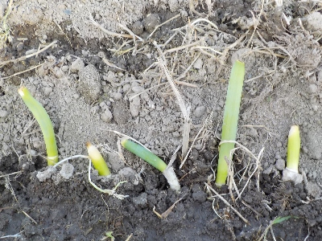
ネギを食べたら根っこの部分を植えています。ネギのタネや苗を買わないので経済的ですね。
でも1年中どこかでネギが植わっています。連作にならないように場所も変えるので、収穫用と植え替え用のスペースが必要になります。
1年中成長しているわけでもないので、なにげに効率が悪い気がする。冬以外はコンパニオンプランツとしてあちこちの野菜の隙間に植えるくらいがいいかな。
【ネギTOP】
【野菜TOP】
【園芸TOP】
2024/06/01
長ネギから葉ネギを収穫しました。
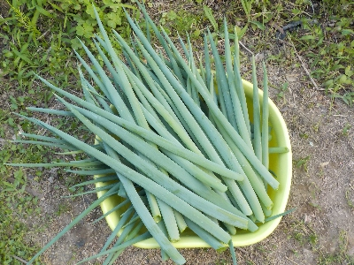
ネギの葉が伸びて、重みで倒れるようになったので収穫しました。
ハサミで切ったんですが、スパッと音をたてて切れて気持ち良かったです。
新玉ねぎの時期なので、今はネギ系が食べ放題になりました。
【ネギTOP】
【野菜TOP】
【園芸TOP】
2024/05/25
近頃ネギ坊主が出来る数が減りました。
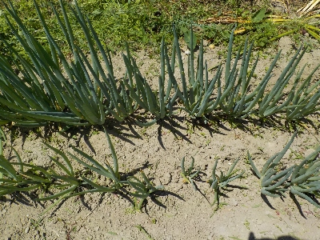
ネギ坊主を見つけたらこまめに取り除いていますが、この頃か数か減りました。
もうネギ坊主の季節じゃなくなったんだな。季節が変わっていくな。
【ネギTOP】
【野菜TOP】
【園芸TOP】
2024/03/30
ネギが成長したので土寄せしました。
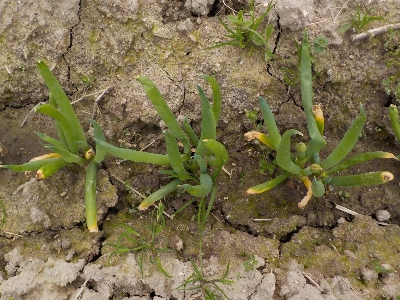
すくすく大きく成長してます。もう葉ネギとして食べれそうです。
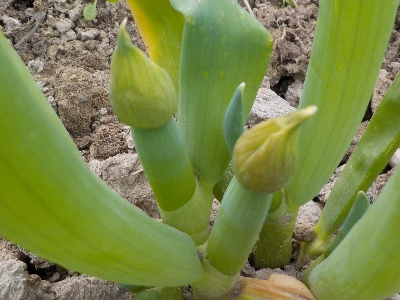
でも春なのでネギ坊主が出来そうです。
今日はネギ坊主取りと土寄せをしました。
【ネギTOP】
【野菜TOP】
【園芸TOP】
2024/03/03
長ネギを追加して植えました。
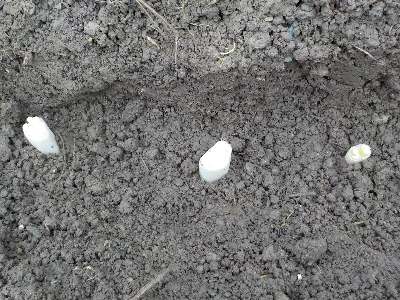
後何本植えれるかな？。実験的にやっているので、もう追加はしない方がいいかも。
【ネギTOP】
【野菜TOP】
【園芸TOP】
2024/02/25
ネギが分裂して育っています。
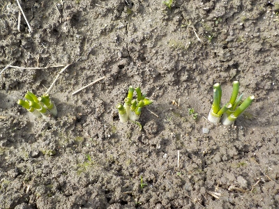
地面に植えたネギがちょっと成長しました。
植えた時は1本とか2本のネギでしたが、分裂して小さいネギが沢山出来そうです。
順調に育てば大増殖です。
【ネギTOP】
【野菜TOP】
【園芸TOP】
2024/02/11
食べた長ネギの株元を植えました。
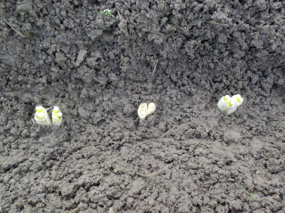
食べた長ネギの株元を畑に植えました。どうなるんでしょうね。
ネギ坊主が出たら取って育て続けるつもりですが、食べるサイズまで育つかな？
これからこの場所でずっと育てるとしたら、長期間場所を使っちゃいますね。なんか効率が悪そうな気がします。
【ネギTOP】
【野菜TOP】
【園芸TOP】
2024/01/08
コンパニオンプランツのネギは、あまり大きくなっていません。
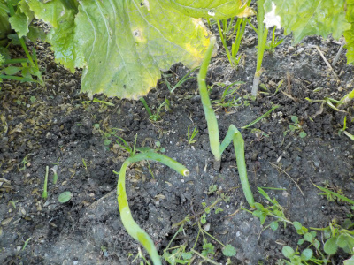
葉物野菜の近くに小ネギを植えたんですが、ネギは小さいので日が当たらず、あまり成長していません。
食べれなくても役に立っていればいいんですが、どうなんでしょうね？。
【ネギTOP】
【野菜TOP】
【園芸TOP】
2023/05/25
小さいネギが沢山出ました。
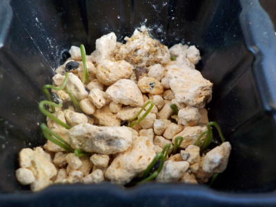
一つの穴に沢山種を蒔いたので、沢山芽が出ました。
地植えするときに株を分けるのが大変そうですね。
【ネギTOP】
【野菜TOP】
【園芸TOP】
2023/05/16
ダイソーで買ったネギのタネをまきました。
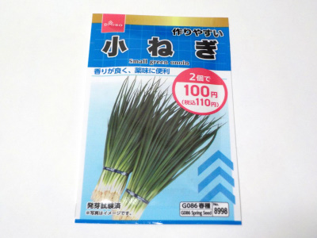
ダイソーで2個110円のタネなので、これ1袋は55円です。
とっても安い。これなら気軽に買えていいです。
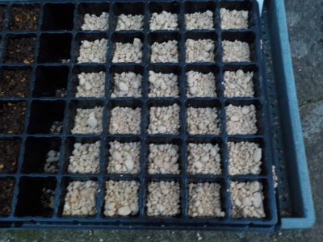
値段が安いのタネの数が少ないと思っていたんですが、多くありました。
1つの穴に10粒以上入れたので、300以上ありました。
大量にネギの苗が出来る予定でいます。
【ネギTOP】
【野菜TOP】
【園芸TOP】
ネギは玉ねぎがないときに欲しい。
【おいしいものを食べよう。】【たくさん寝よう。】
【ソロ活をしよう!】【季節感のあることをしよう。】【動画視聴はほどほどに。】【当サイトの全てのコンテンツは無断転載禁止です。】